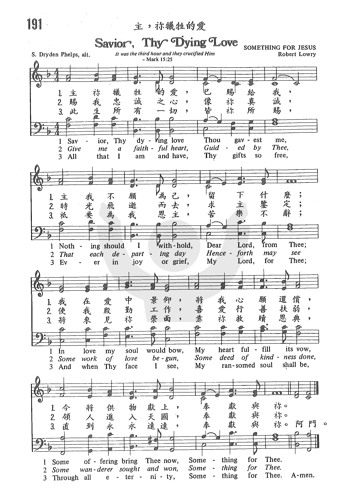

1094 Something For Thee (Saviour Thy Dying Love) 犧牲的愛 NP505
|
|
【主，你犧牲的愛】
詩集：青年新歌02，14
詞：Sylvanus D. Phelps 譯詞：劉凝慧 |
Saviour, Thy Dying Love ]
Saviour, Thy dying love Thou gavest me.
Nor should I aught withhold, dear Lord, from Thee.
In love my soul would bow, my heart fulfill its vow,
Some offering bring Thee now, something for Thee.
At the blest mercy seat, pleading for me,
My feeble faith looks up, Jesus, to Thee:
Help me the cross to bear, Thy wondrous love declare,
Some song to raise, or prayer, something for Thee.
Give me a faithful heart, Guided by Thee.
That each departing day henceforth may see
Some work of love begun, some deed of kindness done,
Some wanderer sought and won, something for Thee.
All that I am and have -- Thy gifts so free --
In joy, in grief, through life, Dear Lord, for Thee!
And when Thy face I see, my ransomed soul shall be,
Through all eternity, Offered for Thee. |
救主犧牲受苦，捨身愛賜給我，我怎可不為主獻自己所有？
愛裡我心俯伏，謹遵我心約誓，今著禮物奉上，獻奉給你
救主施恩憐恤，寶座前代我求，信心不足，唯份仰望主恩惠
請助我背苦架，主妙愛多宣講，詩歌、禱告奉上，獻奉給你
願賜忠心為主，盼你常導我行，每天光陰溜走，盼為主工作：
開展愛心工作，善行美德堅守、初信果子奉上，獻奉給你
我一切皆屬主，皆主厚恩施予，這生經悲或喜，獻奉都歸你！
被贖身心擺上，當面見主那日，深盼不止不息，獻奉給你
[ |
|
https://www.zanmeishige.com/tab/25548.html?songbook=1&index=191

http://pt.fuyinchina.com/m/view.php?aid=7255
 |
| |
|
http://www.hymncompanions.org/Mar/25/stream.php
主，祢犧牲的愛已賜給我，
主，我不願為己留下甚麼；
我在愛中景仰，將我心願還償，
今將供物獻上，奉獻於祢。
主在施恩座前，為我求父，
我的信心軟弱，惟靠耶穌；
助我十架背上，將主妙愛宣揚，
以禱告或歌唱，奉獻於祢。
賜我忠誠之心，像祢真誠，
從今開始表現，每天顯明；
勤作愛心工作，喜愛行善，扶弱，
領人進入天國，虔誠奉上。
此生所有一切，皆祢所賜，
終生為我恩主，苦樂不辭；
有一日見祢面，因祢救贖恩典，
得享永福無限，虔誠奉上。
 (請點耳機收聽)
(請點耳機收聽)
金錢的奉獻，對許多人是剩餘的一小部份，唯獨聖經上這個窮寡婦卻把僅有養生的錢，全數獻上，這是她回報神犧牲的愛。
這首詩的作者費爾普（Sylvanus D. Phelps, 1816-1895）是1636年美國康乃狄格州拓荒者費威廉（William Phelps）的後裔。
他獲布朗大學學士後，再進耶魯神學院攻讀神學，畢業後，1846-1876間在康州數浸信會牧會。 1876年，他辭去牧師之職，主編基督教雜誌。
布朗大學贈他神學博士學位，並請他擔任校董。

費爾普的著作甚豐，他在大學時，就開始寫詩，他的「聖地遊記」（Holy Land）出版後，再版九次。 「犧牲的愛」作於1871年，是應勞瑞（Robert
Lowry, 1826-1899，見五月十四日）之請為出版一本主日學詩歌集而作，而由勞瑞譜曲。

這首歌的另一個英文歌名是 Saviour, Thy Dying Love。
第一、三節：用愛與忠誠來報答主為我犧牲的大愛。
第二節：用信心仰望神，求神加添我力量，使我在任何境況中，仍能見證主的大愛。
第四節：許願奉獻一生，直到見主面，享永福。
有一位姊妹克勤克儉地工作了大半生，節蓄了一筆錢，擬購房屋，當她看中了一幢理想的房子，正想購買時，她的教會為建堂籌款。她的內心起了極大的掙扎，最後自忖：最多自己住一輩子公寓，而神的家將永在；於是她將積蓄悉數奉獻。
二年後，她意外地收到一筆贈款指定給她作購屋之用。 神因她犧牲的愛賜給她一所更理想的居所。
中英文聖詩集參考
英文歌名 Something
for Thee
頌主新歌 505
頌主新歌(中英雙語) 510
新聖詩 197
歡欣讚美 671
聖徒詩集 304
讚美詩(新編)補充本 194
https://hymnary.org/text/savior_thy_dying_love_thou_gavest_me
This incredible hymn addresses the power and meaning behind Christ’s sacrifice
for us. The tune’s composer, Robert Lowry understood the importance of the hymn
and told Phelps on Phelps’ seventieth birthday: “It is worth living seventy
years, even if nothing comes of it but one such hymn as ' Saviour! Thy dying
love.' Happy is the man who can produce one song which the world will keep on
singing after its author shall have passed away." It is a song that we will
continue to sing because the power of saving grace never fails to amaze and
inspire us.
ext:
The text for “Savior, Thy Dying Love” was first published in 1862 by Sylvanus
Dryden Phelps, a Baptist minister. He wrote the text for “Savior, Thy Dying
Love” after he was asked to contribute several hymns for Robert Lowry’s hymn
book, Pure Gold.
Tune:
SOMETHING FOR JESUS is by far the tune most commonly paired with the text. It
was composed in 1871 by Robert Lowry after he received the text from Phelps.
This is the tune that will always be associated with Phelps’ text. This
melancholy, almost mournful tune fits the words well. The hymn generally
sounds better when incorporating harmony into the music.
When/Why/How:
The content of this hymn specifically addresses the sacrifice that Christ made
on the cross, and would be best incorporated in a Good Friday service, although
it could work on Easter Sunday as well.
Suggested music for this hymn:
https://wordwisehymns.com/2011/09/30/saviour-thy-dying-love/
Words: Sylvanus Dryden Phelps (b. May 15, 1816; d. Nov. 23, 1895)
Music: Robert Lowry (b. Mar. 12, 1826; d. Nov. 25, 1899)
Links:
Wordwise Hymns
The Cyber Hymnal
Note: This hymn is sometimes entitled Something for Thee.
This hymn is about doing things for the Lord, in the light of all He’s done for
us. But that requires an important caution. We can never repay the Lord for His
grace–or it wouldn’t be grace (Rom. 4:4-5). But we should be motivated by the
love of the Lord to serve Him, with all we have. The remembrance of Calvary
ought to prompt us to live for Him, and seek to please Him.
CH-1) Saviour, Thy dying love Thou gavest me.
Nor should I aught withhold, dear Lord, from Thee.
In love my soul would bow, my heart fulfill its vow,
Some offering bring Thee now, something for Thee.
Nor is Christ’s work on our behalf all in the past. There is more to contemplate
than His “dying love.” He is presently our great High Priest, in heaven, seated
at the right hand of the Father. There, “He is also able to save to the
uttermost those who come to God through Him, since He always lives to make
intercession for them” (Heb. 7:25). Since He fully understands and sympathizes
with us in our struggles, we are invited to “come boldly to the throne of grace,
that we may obtain mercy and find grace to help in time of need” (Heb. 4:15-16).
CH-2) At the blest mercy seat, pleading for me,
My feeble faith looks up, Jesus, to Thee.
Help me the cross to bear, Thy wondrous love declare,
Some song to raise, or prayer, something for Thee.
There is also His example to follow. While He was on earth, Christ demonstrated,
as Man, how to live in perfect obedience to His heavenly Father. In His
humanity, the Lord Jesus set us the supreme model of godly character. We are to
emulate Him (Jn. 13:15; I Pet. 2:21; cf. I Cor. 11:1). God’s desire is that we
“be conformed to the image of His Son” (Rom. 8:29), and the work of the
indwelling Holy Spirit is to reproduce the character of Christ in us (Gal.
5:22-23).
CH-3) Give me a faithful heart, likeness to Thee.
That each departing day henceforth may see
Some work of love begun, some deed of kindness done,
Some wanderer sought and won, something for Thee.
What good gift can we give the great God of all the universe that He does not
already have? (Or cannot simply create, any time He wants it?) What gift is
worthy of His love?
In a sense, as Mr. Phelps expresses it in his final stanza, we ourselves are the
greatest gift of all that we can give to God. As Paul says of the Macedonian
Christians, “They first gave themselves to the Lord” (II Cor. 8:5). We are to
present ourselves as “living sacrifices” to Him (Rom. 12:1), and the Bible
speaks of “the glory of His inheritance [i.e. His glorious inheritance] in the
saints” (Eph. 1:18). “The Lord’s portion is His people” (Deut. 32:9).
CH-4) All that I am and have, Thy gifts so free,
In joy, in grief, through life, O Lord, for Thee!
And when Thy face I see, my ransomed soul shall be
Through all eternity, something for Thee.
Questions:
1) How have you responded to the love of the Lord in the past few days?
2) How have you perhaps slighted His love recently?